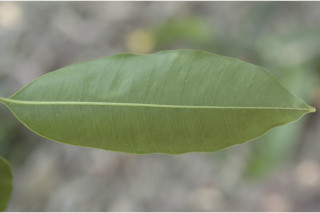
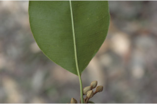
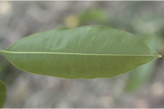
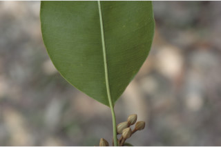
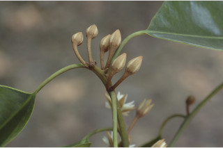
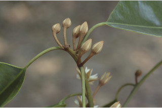

Large trees up to 35 m tall.
35 ಮೀ ಎತ್ತರದವರೆಗಿನ ದೊಡ್ಡ ಗಾತ್ರದ ಮರಗಳು.
Large trees up to 35 m tall.
பெரிய மரங்கள் 35 மீ. உயரம் வரை வளரக்கூடியது.
Bark dark grey, longitudinally fissured, lenticellate; blaze pink.
ತೊಗಟೆ ಕಡು ಬೂದು ಬಣ್ಣ ಹೊಂದಿದ್ದು,ಉದ್ದ ಸಾಲಿನಲ್ಲಿ ಸೀಳಿಕೆಗಳನ್ನೊಳ -ಗೊಂಡಿರುತ್ತದೆ,ವಾಯುವಿನಿಮಯ ಬೆಂಡು ರಂಧ್ರಗಳ ಸಮೇತವಿರುತ್ತದೆ;ಕಚ್ಚು ಮಾಡಿದ ಜಾಗ ನಸುಗೆಂಪು .
Bark dark grey, longitudinally fissured, lenticellate; blaze pink.
மரத்தின் பட்டை கரும்சாம்பல் நிறமானது, நீள்வாக்கில் வலைப்பின்னல் பிளவுகளுடையது, பட்டைத்துளைகள் (லெண்டிசெல்லேட்) உடையது; உள்பட்டை பிங்க் நிறமானது.
Latex white.
ಕಿರುಕೊಂಬೆಗಳು ದುಂಡಾಗಿದ್ದು ಎಳೆಯದಾಗಿದ್ದಾಗ ಸೂಕ್ಷ್ಮ ಮೃದು ತುಪ್ಪಳದಿಂದ ಕೂಡಿದ್ದು ನಂತರ ರೋಮರಹಿತವಾಗುತ್ತವೆ.
Latex white.
வெள்ளை நிற பால் சுரக்கிறது.
Branchlets terete, puberulous when young, later glabrous.
ಸಸ್ಯ ಕ್ಷೀರ ಹಾಲಿನ ಬಿಳಿ ಬಣ್ಣ.
Branchlets terete, puberulous when young, later glabrous.
சிறியநுனிக்கிளைகள் குறுக்குவெட்டுத் தோற்றத்தில் வளையமானது, இளம்பருவத்தில் உரோமங்களுடையது, முதிரும் போது உரோமங்களற்றது.
Leaves simple, alternate, spiral; petiole 1-2.5 cm long, glabrous, terete and canaliculate towards apex; pubescent when young, later glabrous; lamina 7-14 2.5-7 cm, elliptic-oblong, apex shortly acuminate with blunt tip, base rounded or acute, margin slightly undulate, coriaceous, glabrous, shining above; midrib raised above; secondary nerves ca. 18 pairs, slender, looped near margin; tertiary nerves admedially ramified.
ಎಲೆಗಳು ಸರಳವಾಗಿದ್ದು ಪರ್ಯಾಯ ಮತ್ತು ಸುತ್ತು ಜೋಡನಾ ವ್ಯವಸ್ಥೆಯಲ್ಲಿರುತ್ತವೆ ;ತೊಟ್ಟು 1 – 2.5 ಸೆಂ.ಮೀ.ವರೆಗಿನ ಉದ್ದವಿದ್ದು,ಮೇಲ್ಭಾಗದ ದಿಟ್ಟಿನಲ್ಲಿ ಕಾಲುವೆಗೆರೆಯನ್ನು ಹೊಂದಿರುತ್ತವೆ, ಎಳೆಯದಾಗಿದ್ದಾಗ ಮೃದುತುಪ್ಪಳದಿಂದ ಕೂಡಿರುತ್ತದೆ, ನಂತರ ರೋಮರಹಿತವಾಗಿರುತ್ತದೆ;ಪತ್ರಗಳು 7 -14 X 2.5 –7 ಸೆಂ.ಮೀ. ಗಾತ್ರ,ಅಂಡವೃತ್ತ-ಚತುರಸ್ರದ ಆಕಾರ ಹೊಂದಿದ್ದು,ಮೊಂಡಾಗ್ರವುಳ್ಳ ಕಿರಿದಾಗಿ,ಕ್ರಮೇಣ ಚೂಪಾಗುವ ಮಾದರಿಯ ತುದಿ,ದುಂಡಾದ ಅಥವಾ ಚೂಪಾದ ಬುಡ,ಸ್ವಲ್ಪ ಮಟ್ಟಿಗೆ ತರಂಗಿತವಾದ ಅಂಚು, ತೊಗಲನ್ನೋಲುವ ಮೇಲ್ಮೈ ಹೊಂದಿದ್ದು ರೋಮರಹಿತ -ವಾಗಿರುತ್ತದೆ; ಮಧ್ಯನಾಳ ಪತ್ರದ ಮೇಲ್ಭಾಗದಲ್ಲಿ ಮೇಲೆದ್ದಿರುತ್ತದೆ; ಎರಡನೇ ದರ್ಜೆಯ ನಾಳಗಳು ಅಂದಾಜು18 ಜೋಡಿಗಳಿದ್ದು,ತೆಳುವಾಗಿರುತ್ತವೆ,ಅಂಚಿನ ಬಳಿ ಕುಣಿಕೆ -ಗೊಂಡಿರುತ್ತವೆ;ಮೂರನೇ ದರ್ಜೆಯ ನಾಳಗಳ ಕವಲುಗಳು ಎಲೆಯ ಅಕ್ಷದ ಕಡೆಗಿರುತ್ತವೆ.
Leaves simple, alternate, spiral; petiole 1-2.5 cm long, glabrous, terete and canaliculate towards apex; pubescent when young, later glabrous; lamina 7-14 2.5-7 cm, elliptic-oblong, apex shortly acuminate with blunt tip, base rounded or acute, margin slightly undulate, coriaceous, glabrous, shining above; midrib raised above; secondary nerves ca. 18 pairs, slender, looped near margin; tertiary nerves admedially ramified.
இலைகள் தனித்தவை, மாற்றுஅடுக்கமானவை, சுழல் போன்று அமைந்தவை; இலைக்காம்பு 1-2.5 செ.மீ. நீளமானது, உரோமங்களற்றது, குறுக்குவெட்டுத் தோற்றத்தில் வளையமானது மற்றும் நுனிப்பகுதியில் சிறிது கேனாலிகுலேட், இளம்பருவத்தில் உரோமங்களுடையது, முதிரும் போது உரோமங்களற்றது; இலை அலகு 7-14 X 2.5-7 செ.மீ., நீள்வட்டம்-நீள்சதுர வடிவானது, அலகின் நுனி சிறிது அதிக்கூரியதுடன் அதன் முனை மழுங்கியது, அலகின் தளம் வட்டமானது அல்லது கூரியது, அலகின் விளிம்பு சிறிது அலை போன்றது, கோரியேசியஸ், உரோமங்களற்றது, அலகின் மேற்பரப்பு பளபளப்பானது; மையநரம்பு மேற்புறத்தில் அலகின் பரப்பைவிட உயர்ந்து இருக்கும்; இரண்டாம் நிலை நரம்புகள் 18 ஜோடிகள், மெல்லியவை, ஒன்றொடுன்று விளிம்பின் அருகில் (லுப்) இணைந்தவை; மூன்றாம் நிலை நரம்புகள் அட்மீடியல்லி ராமிபைடு.
Flowers white, in axillary fasicles; pedicel up to 2 cm.
ಹೂಗಳು ಬಿಳಿ ಬಣ್ಣದಲ್ಲಿದ್ದು,ಅಕ್ಷಾಕಂಕುಳಿನಲ್ಲಿನ ಗುಚ್ಛಗಳಲ್ಲಿರುತ್ತವೆ; ತೊಟ್ಟು 2 ಸೆಂ.ಮೀ. ವರೆಗಿನ ಉದ್ದ ಹೊಂದಿರುತ್ತದೆ.
Flowers white, in axillary fasicles; pedicel up to 2 cm.
மலர்கள் வெள்ளை நிறமானது, இலைக்கோணங்களில் தொகுப்பாகமைந்தவை; மலர்காம்பு 2 செ.மீ.
Berry, ellipsoid, reddish-brown when ripe; seed one.
ಬೆರ್ರಿ ಅಂಡವೃತ್ತದ ಆಕಾರದಲ್ಲಿದ್ದು,ಕೆಂಪು ಮಿಶ್ರಿತ ಕಂದು ಬಣ್ಣದಲ್ಲಿರುತ್ತದೆ;ಬೀಜದ ಸಂಖ್ಯೆ 1.
Berry, ellipsoid, reddish-brown when ripe; seed one.
முழுச்சதைகனி (பெர்ரி), நீள்வட்ட வடிவானது, கனியும் போது சிவப்பு-ப்ரவுன் நிறமானது; ஒர் விதையுடையது.
 





 
